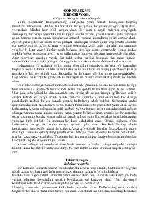

QMGerda va Kayning sarguzashtlari haqidagi sehrli va ibratli ertak.
Bu mashhur ertakda yovuz jodugarning sehrli ko'zgusi parchasi yuragiga kirib qolgan Kay ismli bolakayning muzdek sovuq qalbga aylanishi hikoya qilinadi. Uning do'sti Gerda esa Kayni qutqarish uchun Qor malikasining saroyiga qadar xavfli va sarguzashtlarga boy yo'lni bosib o'tadi. Asar chin do'stlik, mehr-oqibat va jasorat haqida hikoya qiladi.